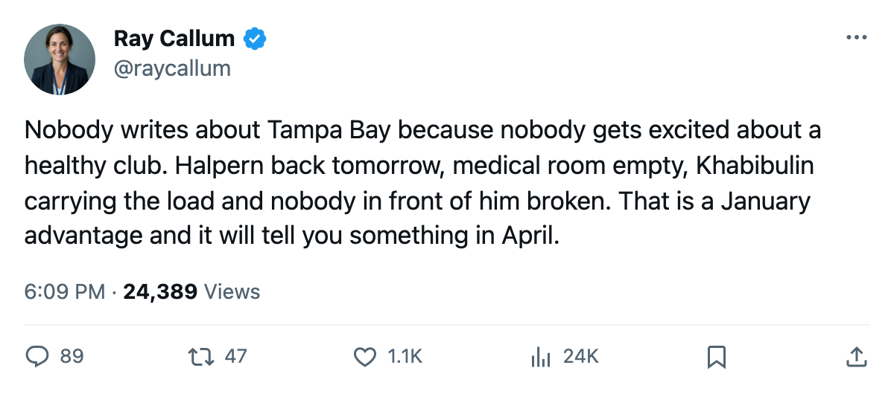

Numbers Game: Tampa Bay Has Lost 45 Days to Injury, the Fewest in This League
Khabibulin has started 88 percent of Tampa Bay's schedule, and the only name on the Lightning's medical list returns tomorrow
 Ray CallumSenior correspondent · Home Ice Network
Ray CallumSenior correspondent · Home Ice Network
 Tampa Bay Lightning has logged 45 days on the injured list this season, fewer than any other club. New York Island has lost 352 days, Vancouver 347, Columbus 280.
Tampa Bay Lightning has logged 45 days on the injured list this season, fewer than any other club. New York Island has lost 352 days, Vancouver 347, Columbus 280.
The Lightning have 17 injury spells across the whole campaign. Their list reads one name right now:  Jeff Halpern78, an abdomen designation, returning on 2006-01-13. By tomorrow the medical room is empty.
Jeff Halpern78, an abdomen designation, returning on 2006-01-13. By tomorrow the medical room is empty.
 Nikolai Khabibulin91 has started 37 of Tampa Bay's 42 games, or 88 percent of the schedule. Only one goaltender in the league carries a heavier share:
Nikolai Khabibulin91 has started 37 of Tampa Bay's 42 games, or 88 percent of the schedule. Only one goaltender in the league carries a heavier share:  Johan Hedberg87 at Pittsburgh, who has played 40 of 42, or 95 percent.
Johan Hedberg87 at Pittsburgh, who has played 40 of 42, or 95 percent.
Tampa Bay sits 5th in the Eastern Conference with 53 points in 42 games. They have won 6 of their last 10, including 4 straight in a stretch that lifted them past Boston and Pittsburgh. The 8th-place  Philadelphia Flyers hold 46 points in 41 games.
Philadelphia Flyers hold 46 points in 41 games.
What the health has bought, in standings terms
Every club between 1st and 7th in the East that has lost fewer days than Tampa Bay either has not had a losing streak this season or plays behind a goaltender with a lower workload share. The  New Jersey Devils have lost 56 days, 11 more than Tampa Bay, and play behind
New Jersey Devils have lost 56 days, 11 more than Tampa Bay, and play behind  Martin Brodeur93, who carries 85 percent of their schedule. The
Martin Brodeur93, who carries 85 percent of their schedule. The  Toronto Maple Leafs have lost 72 days, more than half again what Tampa Bay has lost, and rotate three goaltenders.
Toronto Maple Leafs have lost 72 days, more than half again what Tampa Bay has lost, and rotate three goaltenders.
The clubs below Tampa Bay in the East that are within 7 points of a playoff position all have far worse medical ledgers. Pittsburgh, 4th at 54 points, has lost 206 days. Boston, 6th at 52 points, has lost 236. Buffalo, 9th at 45 points, has lost 190.
The workload question
Khabibulin is at 88 percent in mid-January. He has no loss record on the sheet, but 37 starts in 42 games means his crease time is not getting lighter. Tampa Bay's next four games are all on the road: at  Ottawa Thursday, at
Ottawa Thursday, at  Pittsburgh on 2006-01-17, at Philadelphia on 2006-01-18. Halpern comes back into the lineup before that trip begins.
Pittsburgh on 2006-01-17, at Philadelphia on 2006-01-18. Halpern comes back into the lineup before that trip begins.
I have spent 30 years saying goaltending decides April. Tampa Bay's goaltending is not the question. Whether the men in front of Khabibulin are all standing when April arrives, that is the question. Right now the answer is yes, and it is the only answer like it in this league.
